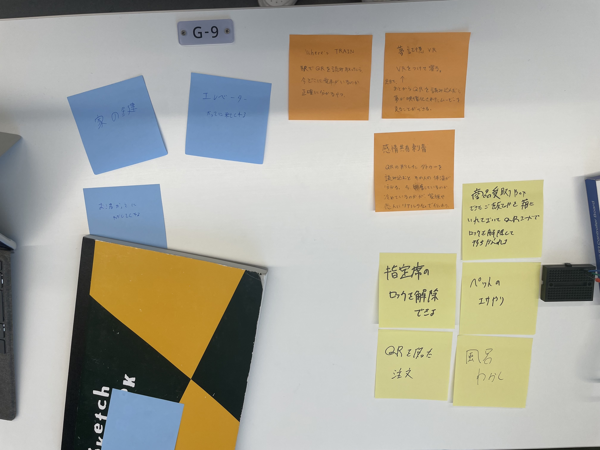
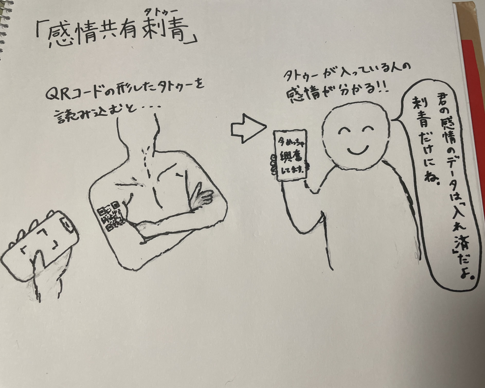

IoTに関して
[IoTとは何か]
IoT = Internet of Things の略。いろんなモノがインターネットにつながって、情報をやり取りしたり、自動で動いたりする仕組みのことである。
インターネットにつながる「いろんなモノ」は、家電製品、自動車、工場の機械など従来インターネットに接続されていなかったものが対象となる。
[IoTで何ができそうか]
グループで考えたアイデア

自分で考えたアイデア
